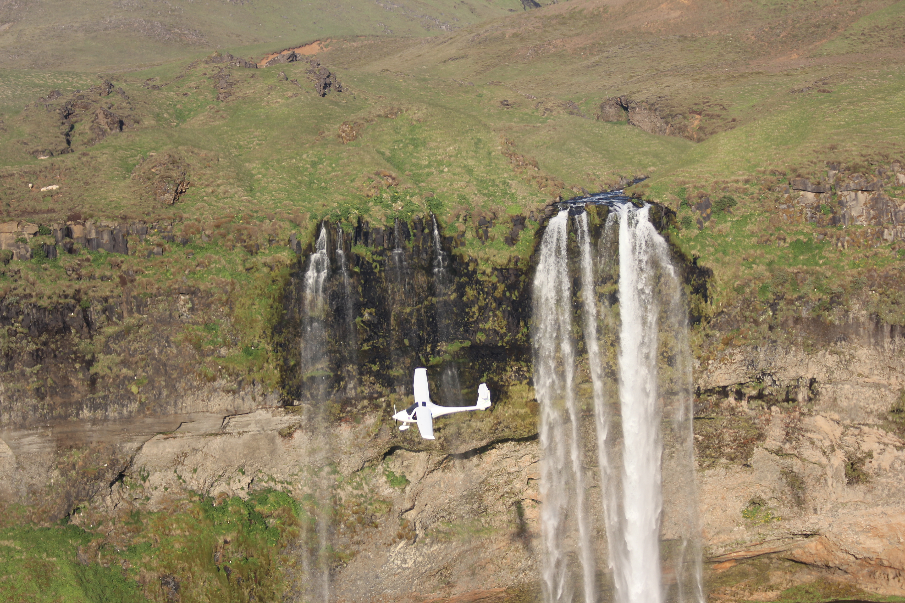
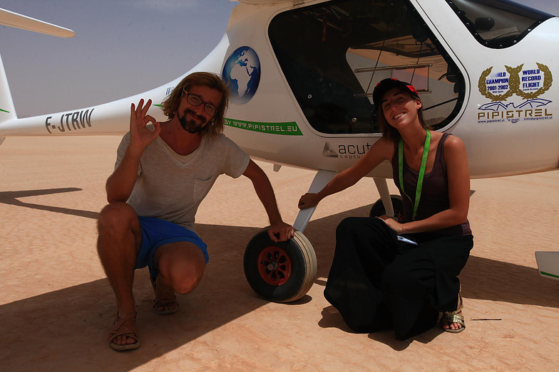
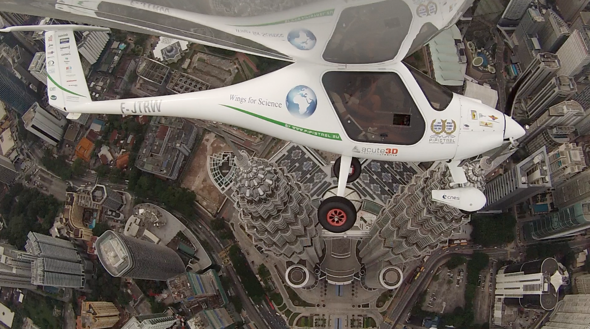
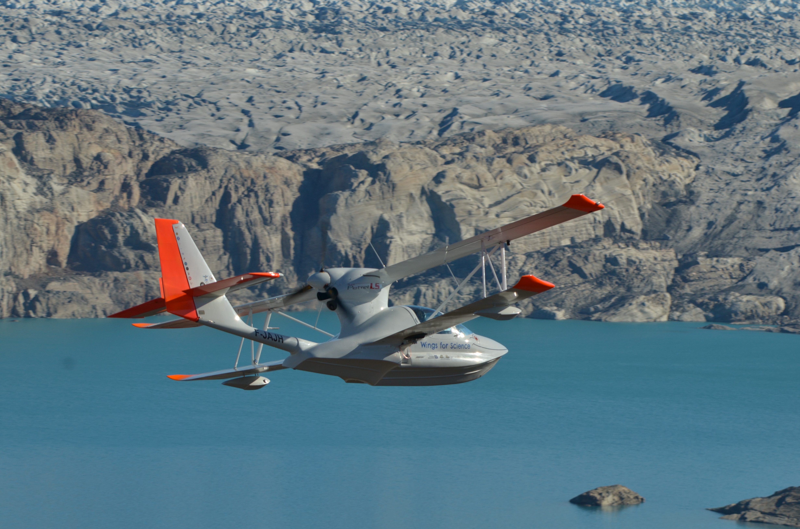
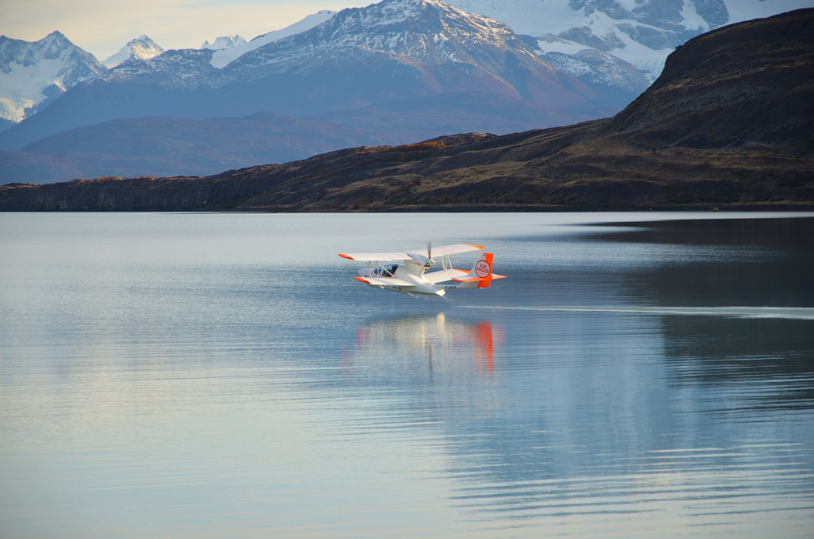
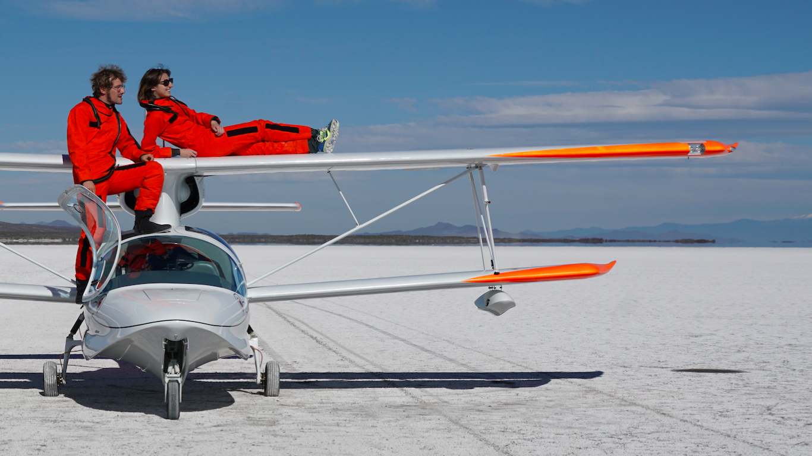

Des Ailes pour la Science
|
Les ULMs que nous utilisons ont chacun été conçus, en partenariat avec les fabricants aéronautiques, pour répondre à nos objectifs : acquérir les données scientifiques nouvelles qui permettront aux scientifiques de mieux étudier, comprendre et protéger notre planète — tout en réduisant au maximum notre impact sur l'environnement.



| Fabricant | Pipistrel |
| Dates | Juin 2012 – Juin 2013 |
| Heures de vol | 450 h |
| Distance parcourue | 54 000 km |
| Pays survolés | 50 |
| Trajet | Tour du monde |
| Étapes réalisées | 102 |
| Vitesse de croisière | 120 kts |
| Consommation | 12 L/h |



| Fabricant | Edra Aeronáutica |
| Dates | Janvier 2016 – Novembre 2017 |
| Trajet | Traversée des Amériques du sud au nord |
| Vitesse de croisière | 90 kts |
| Consommation | 18 L/h |
| Type | Hydravion amphibie |
Retrouvez la carte interactive de toutes nos expéditions et missions scientifiques.
Voir la carte des missions →